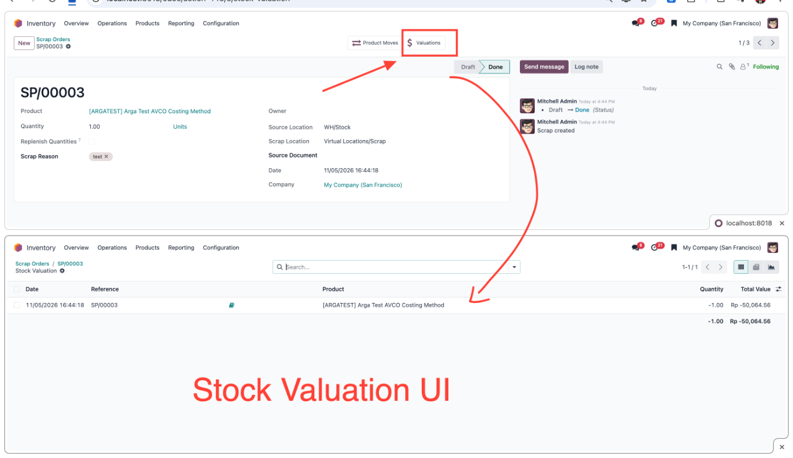

ODOO 17 / INVENTORY / STOCK VALUATION
Open related stock valuation layers directly from a completed Scrap in developer mode.
Enable developer mode, open a completed Scrap, then click Valuations. Review its related valuation layers, quantities, and values with Odoo's standard valuation views.

Click the image to enlarge. Screenshot from Odoo 18 for illustration; the Odoo 17 layout may differ. Existing valuation access rights still apply; developer mode does not grant valuation access.
BY ARGA DWIKI SUWANDI
Send your Odoo version, scrap setup, and issue. No credentials or sensitive data.
argadwiki632@gmail.comIndependent add-on by Arga Dwiki Suwandi. Odoo is a trademark of Odoo S.A.